받고, 설치하고, 처음 설정하기
모닝DAW는 받는 과정부터 간단해요. 검색창에 'morning daw'를 치면 공식 페이지가 맨 위에 나와요. 검색 결과 설명에도 편곡, 녹음, 오디오 편집, 믹싱, 악보, 뮤직비디오까지 하는 가벼운 DAW라고 적혀 있어요.
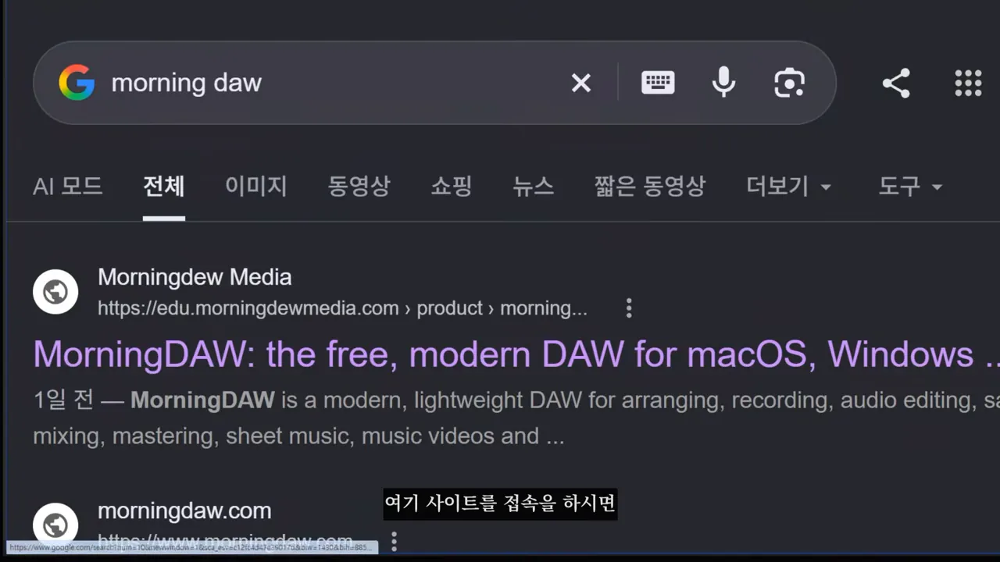
가입과 다운로드
Get Morning DAW Free 버튼을 누르면 가입 화면이 나와요. 가입이라고 해도 이메일 주소를 적고 Join을 누르는 게 전부예요. 메일함에는 무료 구매 확인 메일과 'Verify Your Account' 메일이 함께 와요. 뒤쪽 메일의 Verify 링크를 눌러 인증해야 로그인과 다운로드가 돼요.
로그인한 뒤 My Profile의 Downloads 탭에 가면 리눅스, 맥, 윈도우 버전이 한 줄씩 있어요. 오른쪽 초록 Download 버튼으로 받고, 압축을 풀어 설치 파일을 실행하면 돼요. 설치 중에 따로 고를 건 없어요.
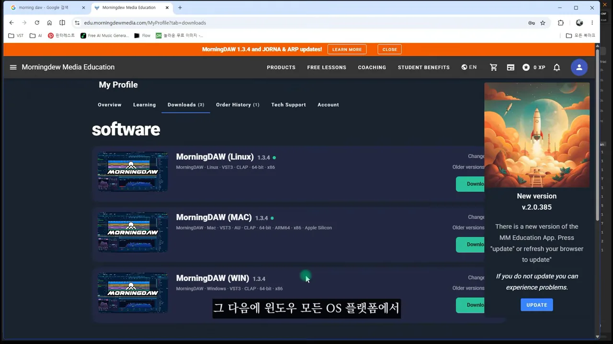
첫 화면, 대시보드
바탕화면 아이콘으로 실행하면 'Good evening' 대시보드가 떠요. 오른쪽 위에는 최근 프로젝트 바로가기가 있어요. 가운데 Create project 버튼으로 새 프로젝트를 만들어요. 아래쪽 줄은 팩 목록인데, 맨 왼쪽 First Light에만 Free 표시가 붙어 있고 나머지는 유료예요. 화자는 First Light에 샘플과 악기가 들어 있으니 꼭 설치하라고 해요. 대시보드는 File 메뉴 맨 위에서 언제든 다시 열 수 있어요.
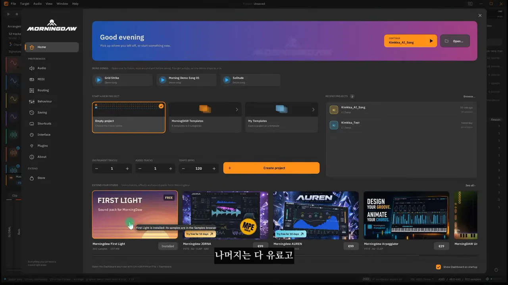
FIRST LIGHT 카드가 무료 팩이에요.
영상 02:45에서 보기화자는 지금은 무료지만 유료화를 염두에 두고 만든 것 같다고 추측해요. 그래도 큐베이스, 프로툴, 로직 프로, 에이블톤 라이브, FL(FruityLoops) 스튜디오, 비트윅 스튜디오의 좋은 점만 모아 둔 느낌이라 써 보면 '이건 저기서 가져왔구나' 싶을 거라고 해요. 악보 표시가 다른 DAW보다 훨씬 가볍고 부드럽다는 점도 미리 강조해요.
Preferences에서 처음 설정하기
새 프로젝트를 만들면 트랙 두어 개가 있는 빈 화면이 떠요. 위쪽 Audio 메뉴에는 Preferences 하나뿐이고, 여기서 모든 설정을 해요. 메뉴가 적은 이유는 대부분의 작업을 오른쪽 클릭 팝업 메뉴로 하기 때문이에요.
Audio 탭 맨 위 Driver 칸에서 오디오 드라이버를 골라요. ASIO(Audio Stream Input/Output), WASAPI(Windows Audio Session API), DirectSound를 고를 수 있어요. 오디오 인터페이스가 있다면 ASIO를 고르고, 그 아래에서 샘플링 레이트와 버퍼 사이즈를 정해요. 화면에서는 48000 Hz, 512 samples로 맞췄고, 그 아래 Buffer latency에 10.67 ms라고 지연 시간이 바로 계산돼 나와요.
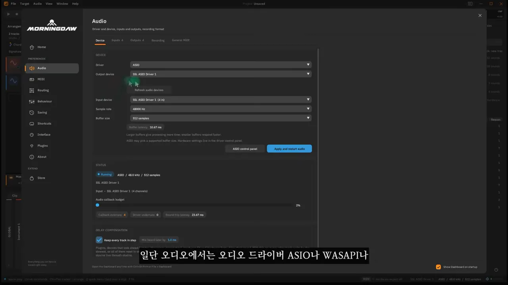
MIDI(Musical Instrument Digital Interface) 탭에서는 컴퓨터에 연결한 미디 건반에 체크해요. 입력·출력 쪽 클럭도 고를 수 있지만, 건반으로 연주만 한다면 건반 하나에만 체크하면 돼요.
Interface 탭의 Theme에는 Graphite, Studio Grey, Slate, Jorna 네 가지 테마와 직접 색을 고르는 Custom이 있어요. 화자는 회색 계열 Studio Grey를 골랐어요. FL 스튜디오나 에이블톤 라이브의 테마 바꾸기와 비슷하다고 해요.
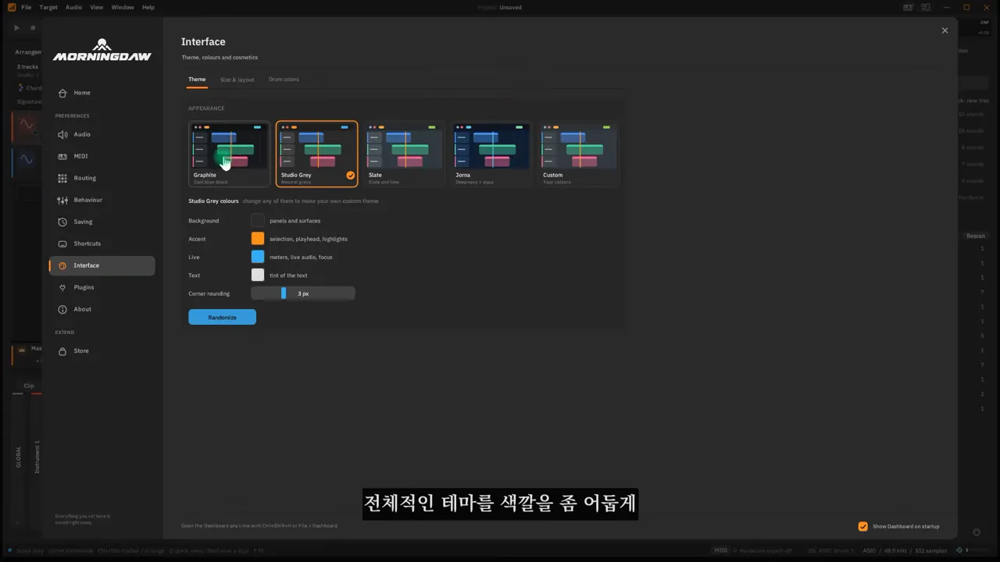
같은 Interface 탭의 Size & layout에서는 화면 배율을 정해요. 기본 100%에서 최대 200%까지 키울 수 있고, 5% 단위로 세밀하게 고를 수 있어요. 모니터 해상도에 따라 글자가 너무 작거나 클 때 쓰면 돼요. 화자는 이 세밀함을 무척 편하다고 해요.
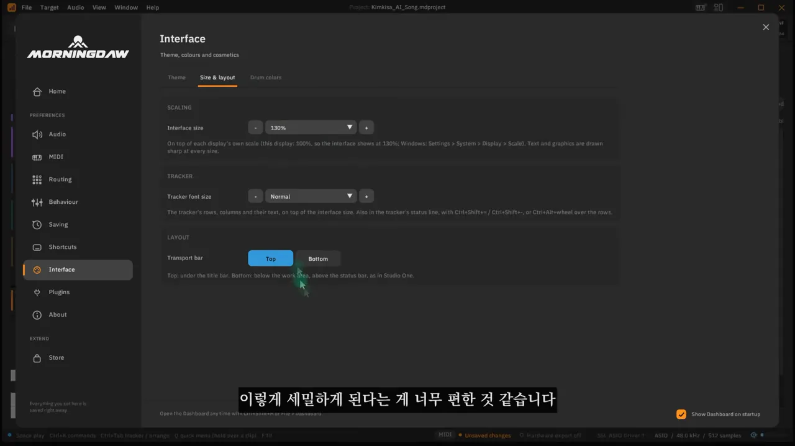
트랙 만들기와 미디어 브라우저
트랙 목록 아래 '+ Add track' 버튼을 누르면 트랙 종류가 나와요. New Track으로 빈 트랙을 만든 뒤 오디오 파일을 끌어다 놓으면 오디오 트랙이 돼요. VST3나 CLAP 플러그인을 고르면 악기 트랙이 되고요.
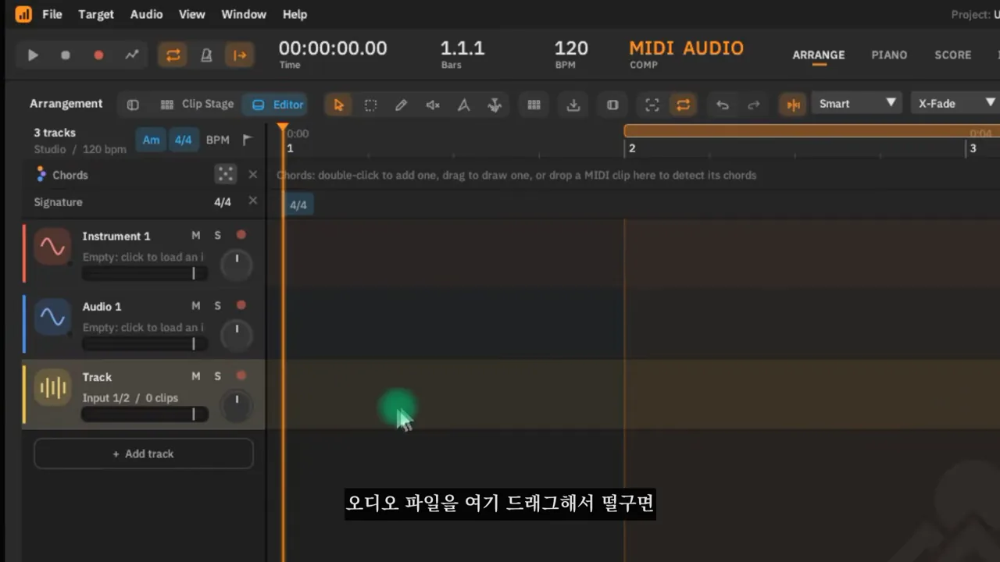
영상에서는 VST3 신시사이저 Serum 2를 골라서 악기 트랙을 만들어요. 플러그인 창이 프로그램 안에서 바로 열려요.
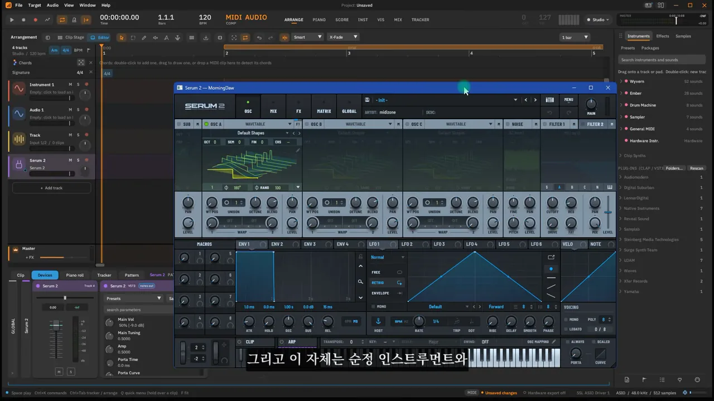
모닝DAW에는 기본 악기와 이펙트도 들어 있어요. 오른쪽 미디어 브라우저의 Instruments 탭에는 Wyvern, Ember, Drum Machine, Sampler 같은 기본 악기가 있어요. 그 옆 Effects와 Samples 탭에 이펙트와 샘플이 분류돼 있어요. 화자는 FL 스튜디오 왼쪽에 있던 Packs 목록이 오른쪽으로 옮겨 온 셈이라고 설명해요.
화면 구성: 위쪽 탭과 아래 패널
모닝DAW에서 가장 먼저 눈에 띄는 건 맨 위에 늘 떠 있는 작업 화면 탭이에요. ARRANGE를 누르면 트랙 배치, PIANO를 누르면 피아노 롤, SCORE를 누르면 곧바로 악보가 나와요. 같은 곡을 탭 하나로 다른 모습으로 바꿔 보는 구조예요. 아래 그림은 영상 여러 장면에 흩어진 화면 구성을 한 장으로 모은 거예요.
VIS(Visualization) 탭은 트랙의 미디 노트를 재생할 때 음표가 화면 아래 건반의 해당 음정에 부딪히는 모습을 보여 줘요. 화자는 이 기능을 '희한한' 기능이라고 부르고, 뒤에서 자세히 보여 줘요.
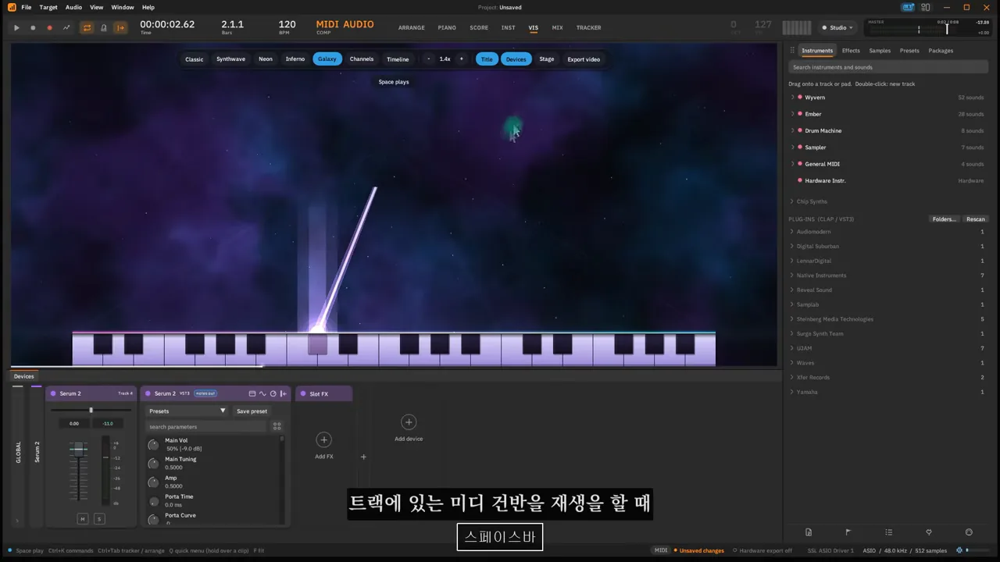
미리 만든 프로젝트로 보는 아래 패널
본격적인 기능은 미리 만든 프로젝트(Kimkisa_AI_Song)로 보여 줘요. 위쪽에 템포 106이 보이고, 그 옆 메트로놈 아이콘으로 클릭 소리를 켜요. 눈금자 아래 Chords 줄에는 D, F#, E 같은 코드 이벤트가 깔려 있어요.
왼쪽에서 LEAD 트랙을 고르자 아래 패널의 Devices 탭에 그 트랙의 장치가 줄지어 나와요. 볼륨 페이더, Spire 신시사이저, 그리고 Chorus·EQ(Equalizer) 6이 들어간 Slot FX(Effects) 순서예요. 아래 탭을 Piano roll로 바꾸면 같은 자리에 피아노 롤이 뜨고, 패널 경계선을 끌어 높이를 바꿔요.
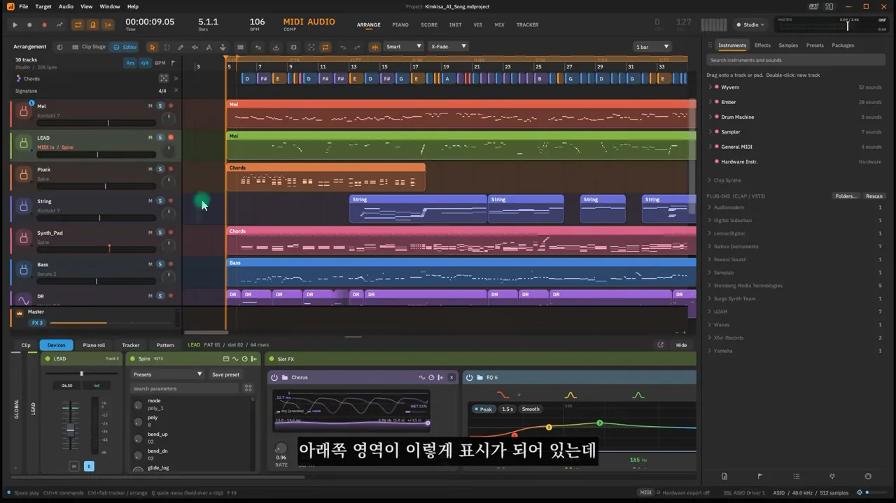
아래 탭에는 Tracker와 Pattern도 있어요. 화자는 Pattern 탭을 최근 큐베이스에 추가된 패턴 에디터와 같은 기능이라고 소개해요.
오른쪽 클릭 메뉴와 코드 진행 만들기
클립은 빈 곳을 더블클릭하면 바로 생겨요. 오른쪽 클릭을 해도 돼요. 오른쪽 클릭을 하면 커서 자리에 원형 메뉴가 떠요. 가운데 TRACK 둘레로 New clip, Paste, Import audio, Chords, Melody, Progression 여섯 항목이 둘러 있어요. 화자는 큐베이스에서 오른쪽 클릭하면 뜨는 도구 모음과는 비교가 안 될 만큼 쉽고 다양하다고 해요.
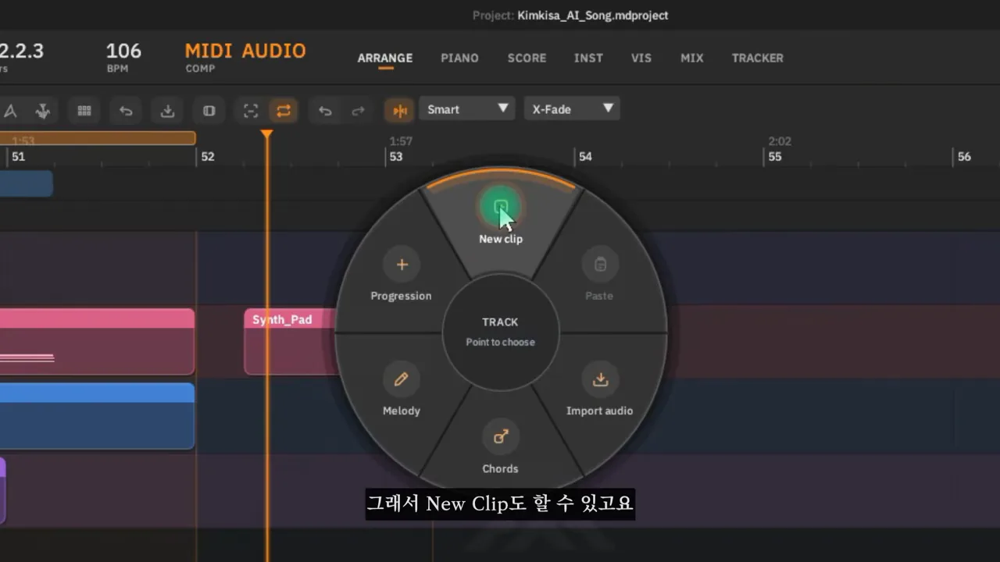
Progression: 코드 진행 자동 생성
원형 메뉴에서 Progression을 고르면 'Generate chord progression' 창이 떠요. 위쪽 Style에서 Cinematic, Jazz, Pop, Lo-fi 같은 장르를 고르고, 그 아래에서 조성(Key), 길이(4·8·16·32), 코드 속도를 정해요. 영상에서는 Jazz를 골랐고, 아래 줄에 Cm7, Fm7, Dm7b5, G7 같은 진행이 만들어졌어요. 이 소리는 지금 선택한 트랙의 악기로 들려요. 피아노 트랙을 골라 두면 피아노 소리로 들리는 식이에요.
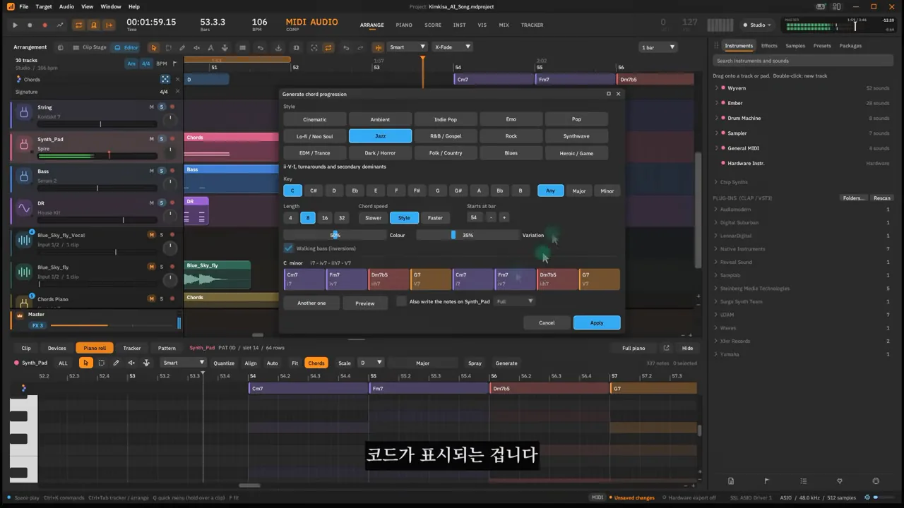
화자는 큐베이스의 코드 패드나 FL 스튜디오의 코드 진행 기능과 비슷하다고 봐요. 이렇게 코드 이벤트를 깔아 둔 뒤 빈 클립을 만들어 더블클릭하면, 피아노 롤 위쪽에 코드 줄이 같이 보여요. 그 코드를 보면서 그리드에 맞춰 노트를 찍으면 돼요.
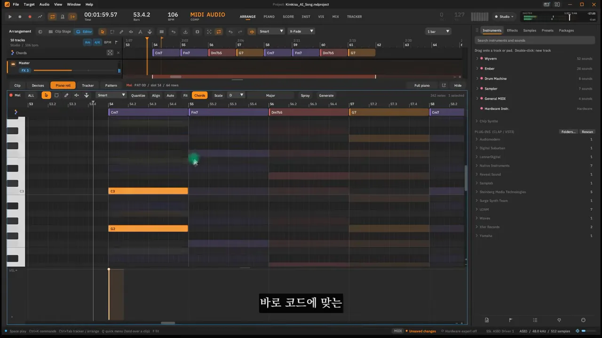
트랙 만드는 방법 다시 정리
화자는 기능이 너무 많아서 특징만 추려 보여 준다며 트랙 만드는 법을 한 번 더 정리해요. 트랙 영역에 오디오 파일이나 미디 파일을 떨구면 트랙이 생겨요. Add Track 버튼으로는 VST3·CLAP 플러그인과 기본 악기(Built-in)를 불러와요. 무료 DAW치고 구성과 짜임새가 있다는 평가예요.
피아노 롤에서도 같은 원형 메뉴
오른쪽 클릭 메뉴는 트랙 영역뿐 아니라 아래 피아노 롤에서도 떠요. 노트를 선택하고 오른쪽 클릭하면 가운데에 'NOTES'와 선택한 노트 수가 나와요. 둘레에는 Edit, Quantize, Transpose, Velocity, Shape, Rhythm, Harmony, Variation 같은 노트 편집 항목이 있어요. 항목을 누르면 바깥 고리에 세부 옵션이 펼쳐져요. 아래 화면은 Variation을 누른 모습이에요. Humanize, Randomize, Dynamics가 보이고, Dynamics를 누르자 바깥에 Expand, Compress가 펼쳐졌어요.
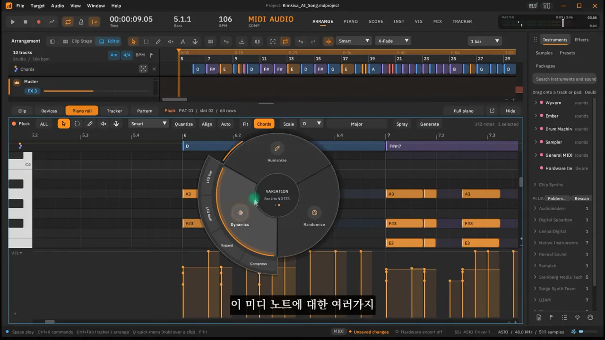
드럼 트랙: 패드에 샘플 끌어 놓기
드럼 트랙을 고르고 아래 Devices 탭을 열면 House Kit라는 드럼 머신이 4×4 패드로 보여요. 패드마다 Kick, snare_trap_02, Closed hat, Open hat, Crash 같은 이름이 붙어 있어요. 에이블톤 라이브를 써 봤다면 트랙을 고를 때 아래에 장치 화면이 뜨는 구조가 익숙할 거라고 해요.
패드를 바꾸는 방법은 끌어다 놓기예요. 오른쪽 Samples 탭에서 Kicks 폴더를 열어 원하는 킥 샘플을 패드에 떨구면 자기만의 킷이 돼요. 패드 오른쪽 칸에는 고른 패드의 파형과 Pitch, One-shot/Gate 같은 재생 설정이 보여요.
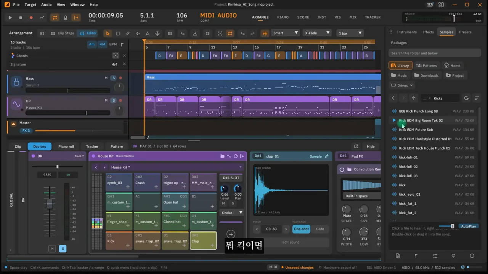
패드 하나가 채널 하나처럼 동작해요. 그래서 패드를 고를 때마다 맨 오른쪽 Pad FX 칸이 그 패드 전용으로 바뀌고, 패드마다 다른 이펙트를 걸 수 있어요. 위 화면에서는 clap 패드에 Convolution Reverb가 걸려 있고, 아래 화면처럼 snare 패드를 고르면 Pad FX 칸이 비어 있어 Add FX로 새로 걸어요. 화자는 비트윅 스튜디오·에이블톤 라이브와 거의 같은 방식이라 그쪽 사용자라면 편하게 쓸 거라고 해요.
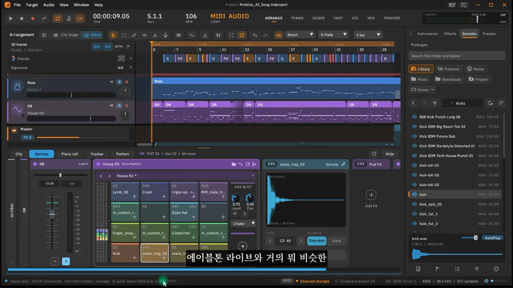
드럼 클립을 더블클릭하면 아래 패널이 Piano roll 탭으로 자동으로 바뀌어요. Devices 탭을 누르면 다시 장치 화면으로 돌아와요. 화자는 이렇게 피아노 롤과 장치 화면을 오가는 편리함, 장치 화면의 높이를 위아래로 늘릴 수 있는 점을 들어 에이블톤 라이브·비트윅 스튜디오보다 낫다고 평가해요.
피아노 롤: 벨로시티 일괄 편집과 코드 자동 분석
벨로시티를 메뉴로 한 번에 바꾸기
하이햇 여러 개의 셈여림을 한꺼번에 바꾸고 싶을 때, 기존 DAW에서는 아래 벨로시티 줄에 선을 그리듯 손봐야 했어요. 모닝DAW에서는 노트를 선택하고 오른쪽 클릭한 뒤 Velocity를 누르면 돼요. 바깥 고리에 100%, 75%, 50%, 25%, +10%, -10%, Fade in, Fade out이 펼쳐져요.
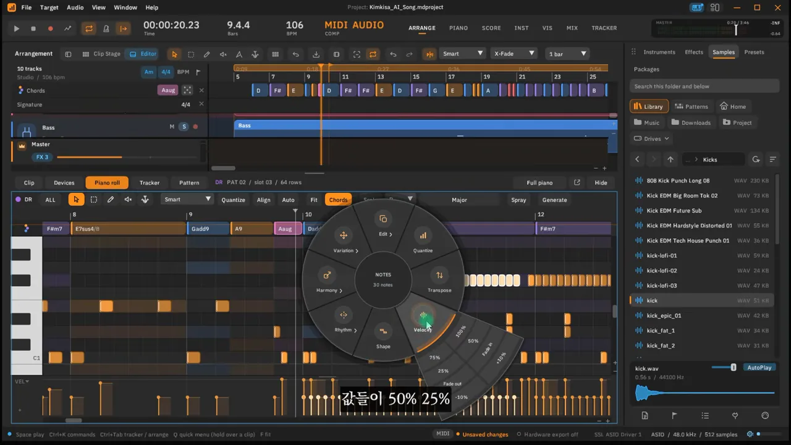
NOTES 30 notes'는 지금 선택한 노트가 30개라는 뜻이에요. 고른 값이 이 30개에 한 번에 적용돼요.
영상 12:04에서 보기Fade in을 고르면 아래 벨로시티 막대가 왼쪽에서 오른쪽으로 점점 높아지는 모양으로 바뀌어요. 75%를 고르면 모든 노트가 75%로 똑같이 맞춰지고요.
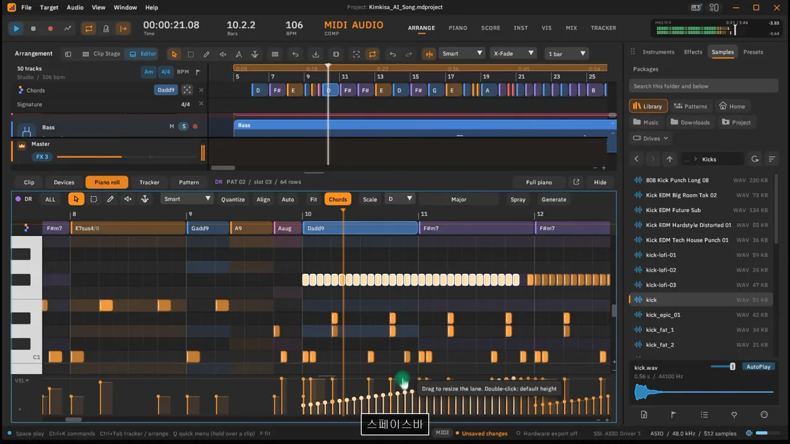
화자는 대상을 고르고 원하는 Quantize나 Velocity를 메뉴에서 바로 고르는 이 방식이 훨씬 진보했다고 봐요. 다만 기존 방식이 손에 익은 사람에게는 예전 DAW 방식이 더 나을 수 있다고 덧붙여요.
코드 이벤트 만들기: 직접 고르기와 자동 분석
피아노 롤 위쪽 코드 줄의 코드는 지금 선택한 트랙의 악기 소리로 울려요. 이 코드 이벤트를 만드는 방법은 두 가지예요.
flowchart LR A["코드 줄 빈 곳 더블클릭"] --> B["코드 선택 창: Root · Quality · Bass 고르기"] --> C["Done → 코드 이벤트 생성"] D["피아노 롤에서 노트 선택"] --> E["그 위 코드 줄 더블클릭"] --> F["자동 분석된 이름 확인 (예: Abm7/F#)"] --> C
첫째는 직접 고르기예요. 코드 줄의 빈 곳을 더블클릭하면 코드 선택 창이 떠요. Root에서 근음을, Quality에서 maj·m·7·sus4 같은 코드 성질을, Bass에서 베이스음을 골라요. 영상에서는 Eb7을 만들고 Done을 눌렀어요. 지울 때는 오른쪽 클릭 Delete를 하거나, 코드를 선택하고 Delete 키를 눌러요.
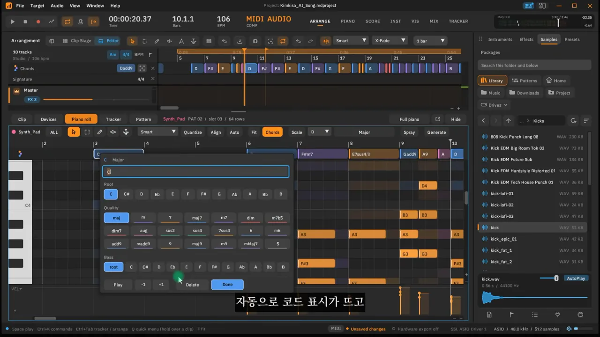
둘째는 자동 분석이에요. 이미 찍어 둔 노트를 선택하고 그 위 코드 줄을 더블클릭하면 프로그램이 화음을 분석해요. 영상에서는 무슨 코드인지 모르고 찍은 노트들을 'Abm7/F#'으로 알아냈어요. 창에서도 Root는 Ab, Quality는 m7, Bass는 F#으로 미리 골라져 있어요.
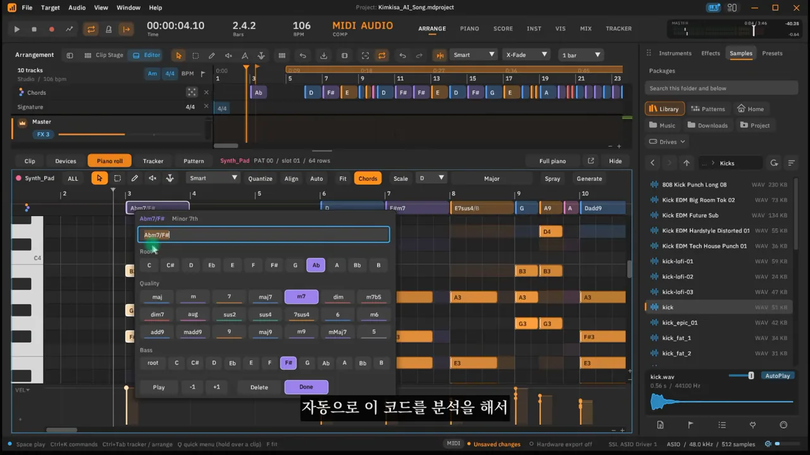
화자도 노트를 대충 찍어 둔 뒤 클릭만 반복해서 곡 전체의 코드 진행을 만들었다고 해요. FL 스튜디오도 이렇게는 못 한다며, 다른 상용 DAW보다 확실히 앞선 기능으로 꼽아요.
이 부분은 정말 다른 상용 DAW에 비해서 정말 압승이다
— 영상 13:40
부드러운 확대·축소
Ctrl을 누른 채 마우스 휠을 굴리면 가로로 확대·축소되고, Alt를 누른 채 굴리면 트랙 높이가 바뀌어요. 화자는 지연 없이 부드럽게 움직인다는 점을 직접 보여 줘요.
악보(Score) 보기
악보를 보려고 따로 악보 창을 켜고 설정할 필요가 없어요. 위쪽 ARRANGE 오른쪽의 SCORE 탭을 누르면 지금 재생 위치의 악보가 바로 떠요. 모든 미디 트랙이 파트별로 한 화면에 나와요. Ctrl과 휠로 악보를 키우고 줄여요.
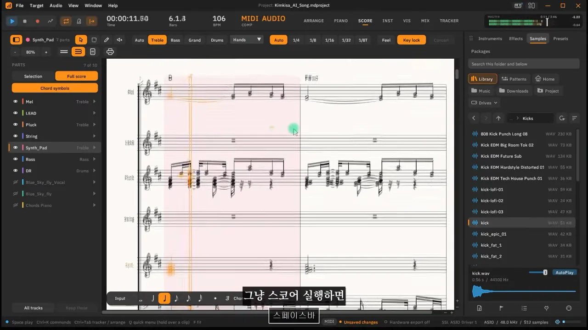
세 가지 보기
툴바 왼쪽 아래 아이콘 세 개로 보기 방식을 바꿔요.
| 보기 | 모습 |
|---|---|
| Linear | 검은 배경에 흰 악보가 한 줄로 길게 이어져요 |
| Wrapped | 확대·축소에 맞춰 줄바꿈되는 악보예요 |
| Page | 인쇄할 때처럼 쪽 단위로 보여 줘요 |
Linear로 바꾸면 배경이 검게 바뀌고 악보가 오른쪽으로 끝없이 이어져요. 재생 위치는 주황 세로선으로 보여요.
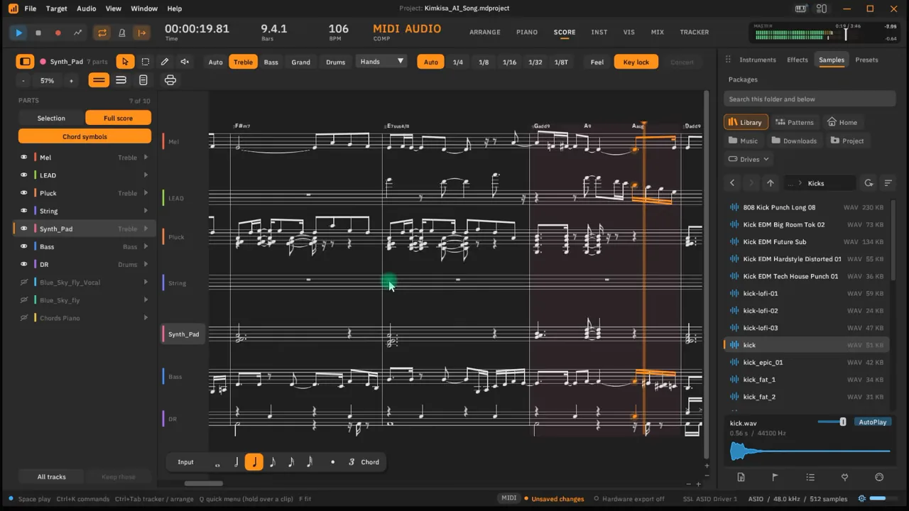
Page 아이콘에 마우스를 올리면 'Page: the score on pages, as it prints'라는 설명이 떠요. 흰 종이에 악보책처럼 정리돼 보여요.
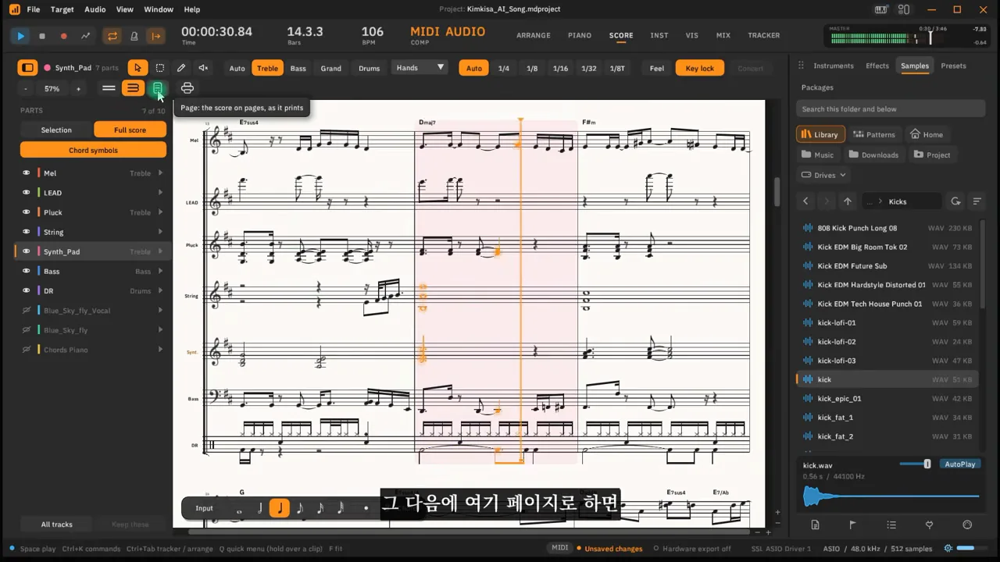
파트마다 보이기와 음자리표 정하기
왼쪽 PARTS 목록에서 눈 아이콘으로 파트를 악보에 보일지 감출지 정해요. 트랙의 뮤트·솔로와는 따로 움직여서, 소리는 그대로 두고 멜로디 파트만 악보에서 감출 수 있어요.
파트 이름 옆 삼각형을 누르면 Clef(음자리표), Transpose, Rhythm을 고를 수 있어요. 음자리표는 기본이 Auto이고, Treble, Bass, Grand Staff, Percussion으로 바꿀 수 있어요. 영상에서는 드럼 파트(DR)를 Percussion으로, 베이스를 Bass로 지정해 낮은음자리표 한 줄만 보이게 했어요. 피아노처럼 큰보표가 필요하면 Grand Staff를 고르거나 Auto로 두면 돼요.
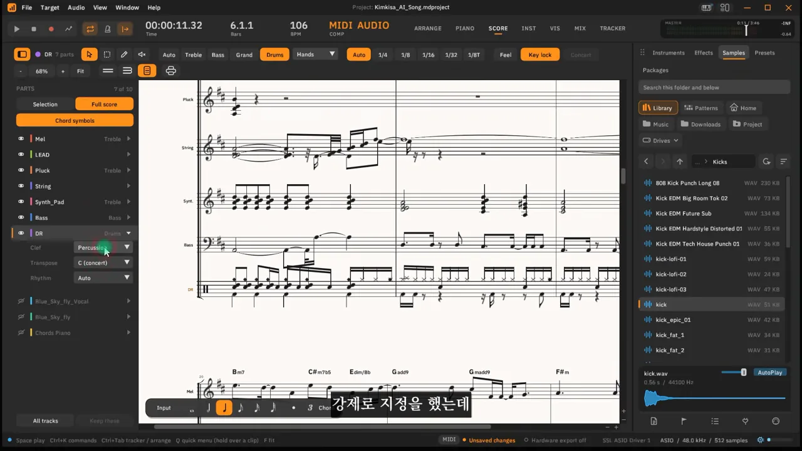
화자가 꼽은 기존 상용 DAW의 불편은 악보에서 재생할 때 해당 위치로 바로바로 따라가지 않는 점이었어요. 모닝DAW는 스크롤이 매끄러워 지금 연주되는 곳이 잘 보인다고 해요.
트래커와 비주얼라이제이션
화자는 마지막으로 모닝DAW에만 있다고 보는 기능 두 가지를 보여 줘요. 트래커와 비주얼라이제이션이에요.
트래커
미디 시퀀싱을 오래 해 온 사람이라면 아는 트래커는 초창기 시퀀싱 방식이에요. 위쪽 TRACKER 탭을 누르면 트래커 모드로 바뀌어요. 노트가 위에서 아래로 흐르는 행에 음 이름과 숫자로 적혀요. 화면에서는 Mel, LEAD, Pluck 세 열에 E-5, D-5, F#5 같은 음이 행마다 찍혀 있어요.
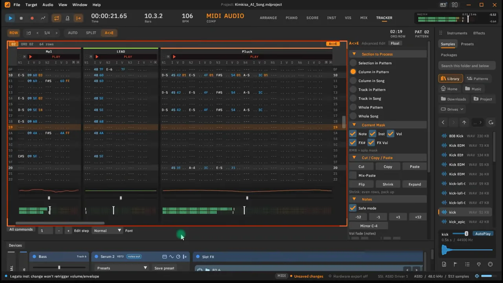
비주얼라이제이션 (VIS)
위쪽 VIS 탭은 곡 전체를 시각 효과로 보여 줘요. 화자는 음악을 만들어 유튜브에 올리는 사람이라면 흥미로울 기능이라고 해요. FL 스튜디오의 비주얼라이저 에디터보다 가볍고 좋다고 평가해요. 트랙을 재생하면 음표가 빛줄기처럼 떨어져 아래 건반의 해당 음에 부딪혀요.
화면 위쪽 버튼 줄에서 모양을 골라요. Classic, Synthwave, Neon, Inferno, Galaxy, Channels, Timeline이 있고, 옆에 배율(1.4x), Title, Devices, Stage, Export video 버튼이 있어요. 아래 화면은 Galaxy 모양이에요.
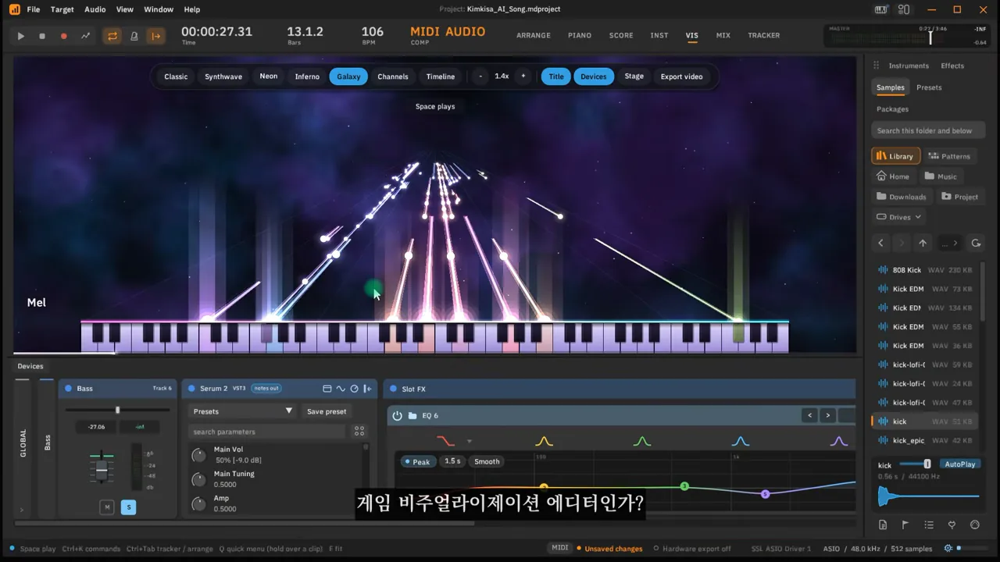
Inferno를 고르면 건반 위로 불꽃 기둥이 솟는 모양으로 바뀌어요. 같은 연주라도 모양에 따라 분위기가 꽤 달라져요.
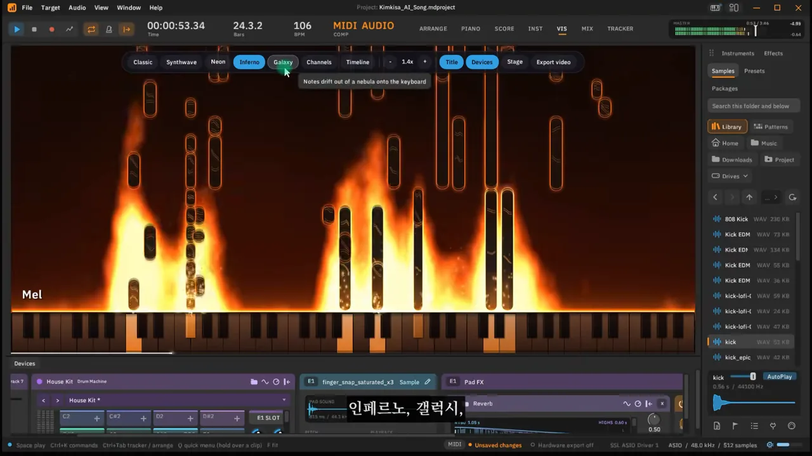
모닝DAW로 만든 곡 들어 보기
영상은 화자가 모닝DAW로 만든 곡을 비주얼라이저로 틀며 마무리해요. 가사 자막이 화면 위에 나오고, 아래 패널에는 드럼 패드와 이펙트가 움직여요.
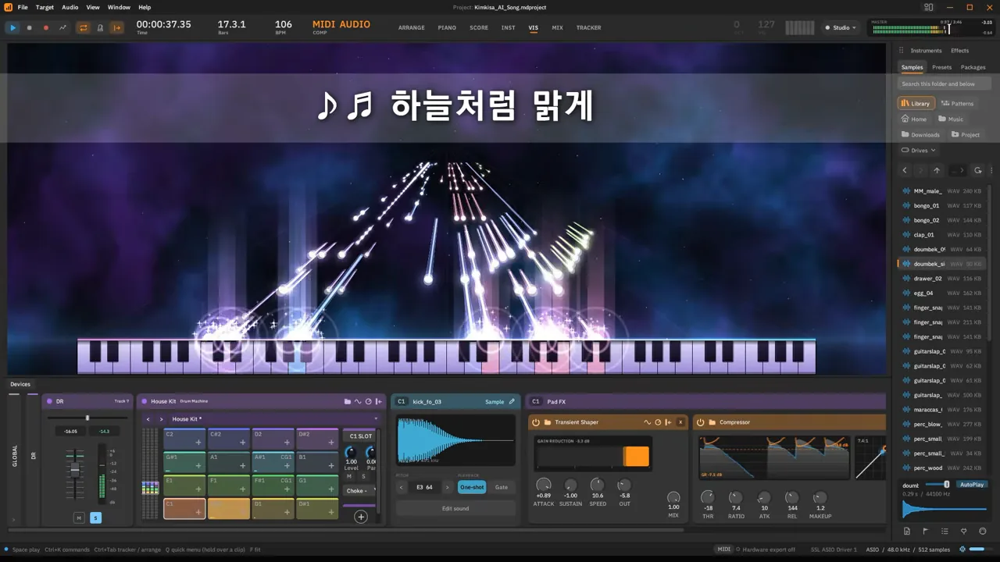
19:45부터는 같은 곡을 Score 모드로 끝까지 들려줘요. 악보가 재생 위치를 따라 넘어가는 모습을 볼 수 있어요.
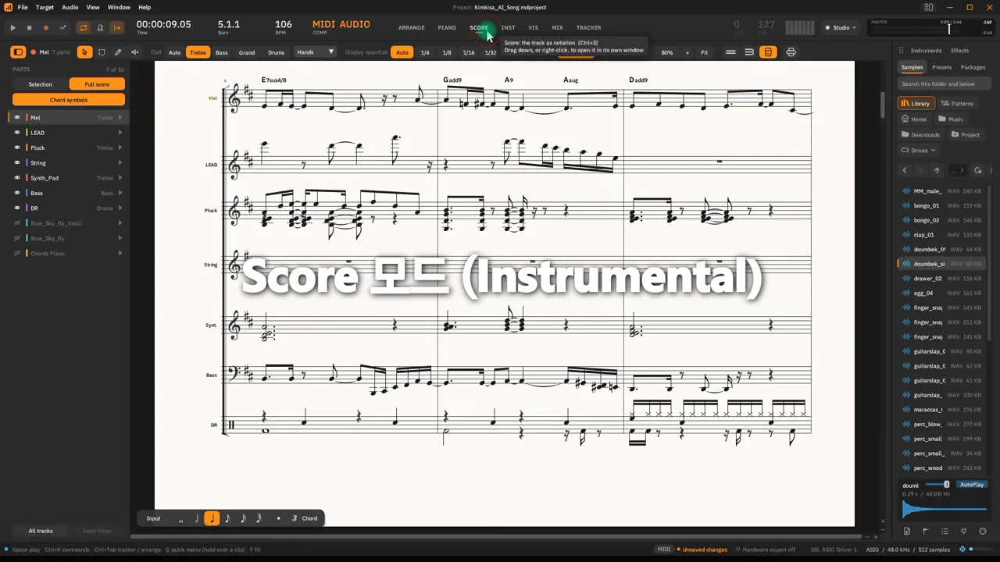